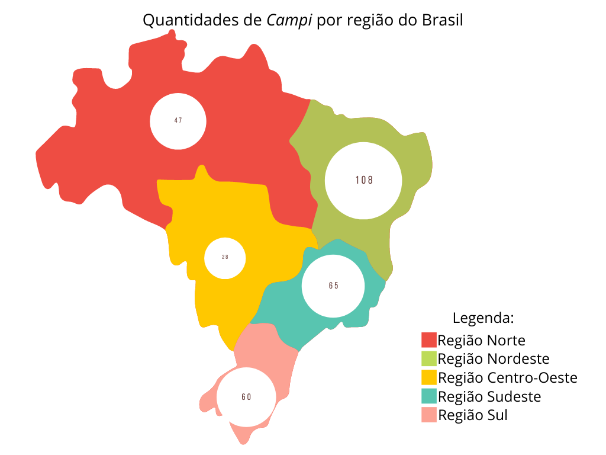

- Sumário
O presente estudo utilizou como base os dados do ano de 2019 (PNP 2020 - ANO BASE 2019), da plataforma Nilo Peçanha.
A plataforma Nilo Peçanha fornece dados educacionais sobre as Instituições de Ensino da Rede Federal de Educação, Ciência e Tecnologia.
Link para acesso: Clique aqui
A metodologia de levantamento de dados consistiu em acessar o PNP 2020 - Ano base 2019, na aba: 1.2 Tipo de Curso.
Padrões de busca pelos dados:
- Região: Tudo
- UF: Tudo
- Município: Tudo
- Organização Acadêmica: Instituto Federal
- Instituição: Tudo
- Unidade de Ensino: Tudo
- Tipo de Curso: Técnico
- Tipo de oferta: Tudo
- Nome Curso: Técnico em Informática
- Modalidade de Ensino: Tudo
- Turno: Tudo
- Eixo Tecnológico: Tudo
- Subeixo Tecnológico: Informática
- Fonte de Financiamento: Recursos Orçamentários
Considerando a replicabilidade do estudo científico, é importante que os dados sejam preenchidos da mesma forma em uma futura busca.
Os resultados da busca sobre os cursos técnicos em Informática retornaram os seguintes valores:
I - Dados Gerais dos cursos "Técnico em Informática" pelo Brasil
| Unidades* | Cursos** | Matrículas |
|---|---|---|
| 308 | 583 | 51.526 |
** Corresponde ao número total de Cursos Técnicos em Informática ofertados.
| Ingressantes | Concluintes | Vagas | Inscritos*** |
|---|---|---|---|
| 16.597 | 8.669 | 17.168 | 82.354 |
Fonte dos dados: Plataforma Nilo Peçanha, 2022
II - Distribuição dos cursos "Técnico em Informática" pelo Brasil
Distribuição dos Cursos por região geográfica:
 Observação: A proporção representada na imagem precisa ser ajustada, pois não utiliza a
mesma escala.
Observação: A proporção representada na imagem precisa ser ajustada, pois não utiliza a
mesma escala.
Fonte dos dados: Plataforma
Nilo Peçanha, 2022
Fonte da imagem: Do Autor, 2022.
Descrição da imagem: Há um mapa do Brasil dividido nas regiões:
Sul; Sudeste; Centro-Oeste; Norte; Nordeste;
A distribuição dos cursos é a seguinte:
Região Sul: 85 cursos;
Região Sudeste: 107 cursos;
Região Centro-Oeste: 48 cursos;
Região Norte: 96 cursos;
Região Nordeste: 247 cursos;
III - Distribuição dos cursos "Técnico em Informática" por Campi pelo Brasil
Distribuição dos Campi por região geográfica:
 Observação: A proporção representada na imagem precisa ser ajustada, pois não utiliza a mesma escala.
Fonte dos dados: Plataforma
Nilo Peçanha, 2022
Fonte da imagem: Do Autor, 2022.
Descrição da imagem: Há um mapa do Brasil dividido nas regiões:
Sul; Sudeste; Centro-Oeste; Norte; Nordeste;
A distribuição dos Campi é a seguinte:
Região Sul: 60 Campi;
Região Sudeste: 65 Campi;
Região Centro-Oeste: 28 Campi;
Região Norte: 47 Campi;
Região Nordeste: 108 Campi;
IV - Levantamento dos currículos dos cursos
Conforme visto acima, existem 583 cursos técnicos em Informática nos Institutos Federais do Brasil.
Devido ao volume considerável de dados, as especificações detalhadas sobre o levatamento podem ser
visualizadas aqui:
- Por meio da plataforma Nilo Peçanha obtêve-se a lista de cursos.
- Os dados foram reunidos em uma planilha contendo as colunas: Instituição; Campus; Tipo de Oferta; Status;
- A etapa 3 consistiu no download dos Projetos Pedagógicos de Curso (currículos) disponíveis na Internet. Para a localização dos currículos foram utilizados: Sites instituicionais dos Institutos Federais e Motores de Busca (Google from Alphabet Inc.)
Lista bruta de dados:
| Modalidade do Curso | Quantidade de resultados encontrados |
|---|---|
| Concomitante | 50 |
| PROEJA | 8 |
| Subsequente | 115 |
| Integrado | 256 |
| Total Geral | 429 |
Fonte: Do Autor, 2022
Em Instuição é apresentado a sigla institucional que representa o nome do Instituto.
Em Campus é apresentado o nome da cidade em que é ofertado o curso.
Em Tipo de Oferta é representado a forma de oferta do curso.
Sendo:
Subsequente: O curso técnico é ofertado de forma posterior a conclusão do Ensino Médio Regular;
PROEJA: O curso técnico é ofertado de forma integrada ao Ensino Médio Regular na modalidade de Educação de Jovens e Adultos (EJA);
Concomitante: O curso técnico é ofertado por uma instituição formativa (Instituto Federal) e o Ensino Médio Regular é ofertado em outra instituição de ensino;
Os dois cursos ocorrem de forma simultânea.
Em status é apresentada a situação do currículo do curso.
Caso a informação esteja faltando, há uma sinalização;
Casos extraordinários receberam uma anotação;
Visualizar a base de dados bruta
Resumo dos dados disponíveis, ou seja, dos currículos encontrados:
| Modalidade do Curso | Quantidade de currículos localizados | Total de Instituições |
|---|---|---|
| Concomitante | 20 | 11 |
| PROEJA | 2 | 2 |
| Subsequente | 54 | 21 |
| Integrado | 180 | 36 |
| Total Geral | 256 | - * |
Os currículos analisados podem ser baixados aqui:
Currículos para downloadPara facilitar o acesso as informações você pode:
Acessar a dashboard dos Currículos
V - Análise dos currículos
Conforme visto acima, existem 583 cursos técnicos em Informática nos Institutos Federais do Brasil.
| Instituição | Campus | Modalidade | Duração do curso | Ano do PPC | Disciplina | Ano de Oferta da Disciplina | Semestre | Horas da Disciplina | Linguagem identificada | Conteúdos | Bibliografia Básica | Bibliografia Complementar |
|---|---|---|---|---|---|---|---|---|---|---|---|---|
| {{course.instituição}} | {{course.campus}} | {{course.modalidade}} | {{course.duração}} | {{course.ano}} | {{course.disciplina}} | {{course.ano_oferta}} | {{course.semestre}} | {{course.horas}} | {{course.linguagem}} | {{course.conteúdos}} | {{course.bibliografia_básica}} | {{course.bibliografia_complementar}} |